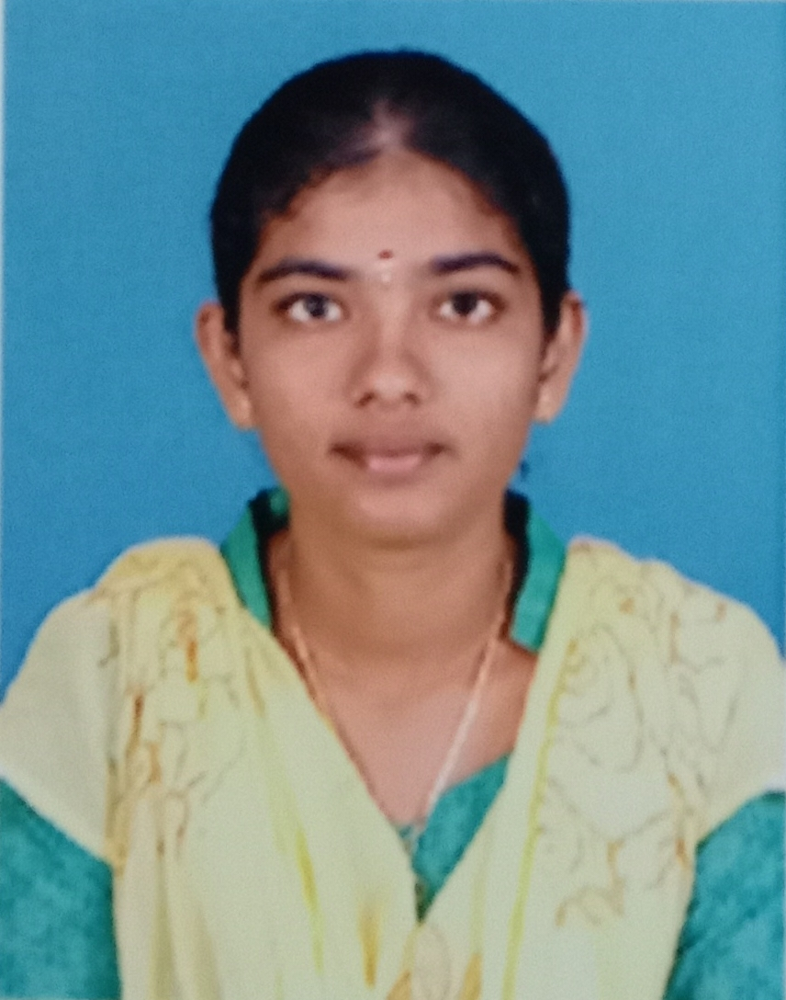

RESUME
THAMIZHINI K A
9994061719
thamizhini1302@gmail.com

CAREER OBJECTIVE
Secure a responsible opportunity to fully utilize my experience and skills while making a significant contribution to the success of the company.
EDUCATIONAL QUALIFICATION
| Qualification |
Institution |
Year of Completion |
Percentage |
| Pursing B.Tech IT |
Kongu Engineering College |
2024 |
9.87 |
| HSC |
Bharathiyar Hr.Sec School,Attur |
2020 |
84.5 |
| SSLC |
Bharathiyar Mat School,Attur |
2018 |
94.8 |
SKILL SET
Languages known
- C
- Java(Basics)
- Python(Basics)
AREA OF INTEREST
- Web Technolgy
- Certificate Desiging
PAPER PRESENTATION AND WORKSHOP
- Paper on “Big Data In Medical Analytics” in “SIGN 2K21” on 30th Oct 2021 at Kongu Engineering College, Perundurai and won 1st prize .
- Workshop in “AI,ML and DL Using Matlab” at Vardhaman College Of Engineering in Association with Wiley in 2021.
COURSES COMPLETED
- One credit course on version control using GitHub.
- ero coding : data analysis for IoT using node red.
EXTRA CURRICULAR ACTIVITES
- Won 3rd Place in Technical Quiz at “SIGNIN 2K21” held at KEC on 30th Oct 2021.
- Attended nearly 5-10 webinars on various topics in the area of Information Technology.
RESPONSIBILITIES
- Executive member of Srinivasa Ramanujan Mathematics Club for a year.
- As a Member of CSI, EERC, EEC and Agri Tech Club.
HOBBIES
STRENGTH
- Handled the documentation works of the events.
- Managing the plans of the team.
- Working restlessly on the assigned work.
PERSONAL PROFILE
NAME : K.A.Thamizhini
DATE OF BIRTH :13.11.2002
FATHER'S NAME :S.Athiappan
MOTHER’S NAME :A.Kavitha
SEX :Female
NATIONALITY :Indian
LANGUAGES KNOWN :Tamil, English
PERMANENT ADDRESS:
D/O S.Athiappan,
Chinna thambi thoottam,
Umayalpuram(PO), P.N.Palayam(TK),
Salem(DT) -636119.
REFERENCE
Dr. R.Thangarajan
Professor and Head
Dept of Information Technology
Kongu Engineering College,Perundurai-638060
PLACE:Salem, Tamilnadu
SIGN:THAMIZHINI K A